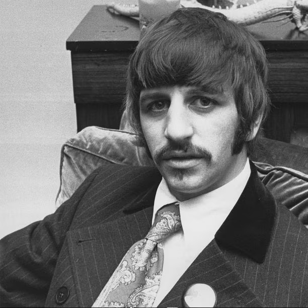
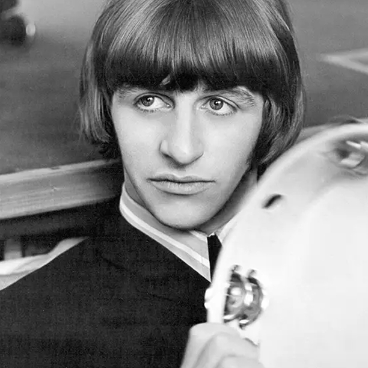
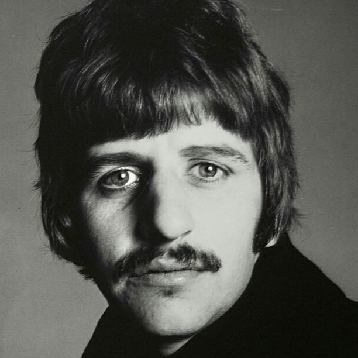

1. Sir Ringo Starr, pseudonimo di Richard Starkey (Liverpool, 7 luglio 1940), è un cantautore, batterista, polistrumentista, compositore, attore e pittore britannico.

2. Dal 1962 al 1970 è stato il batterista e talvolta cantante principale o corista dei Beatles, per i quali ha anche composto due canzoni (Don't Pass Me By e Octopus's Garden).

3. Dopo lo scioglimento del gruppo, ha intrapreso una carriera individuale sia come musicista sia come attore cinematografico. Da appassionato di pittura, dipinge e sovvenziona molti premi nazionali inglesi.
 4. Il suo stile batteristico, assai particolare e per molti versi innovativo era estremamente preciso, al punto che durante le sedute di registrazione dei Beatles i suoi errori si potevano contare sulle dita di una mano.
4. Il suo stile batteristico, assai particolare e per molti versi innovativo era estremamente preciso, al punto che durante le sedute di registrazione dei Beatles i suoi errori si potevano contare sulle dita di una mano.